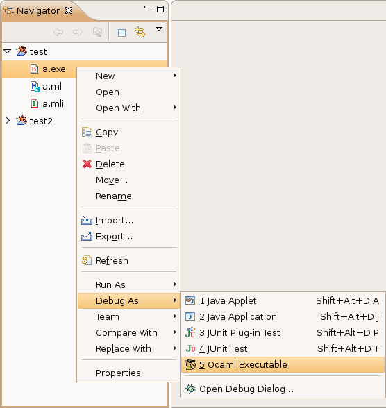

You can debug O'Caml programs that are running on another computer with OcaIDE. The debugger opens a port on your machine and acts as a server, that receives connections from the debugged program running remotely.
You must have two copies of the program: one on the machine it will run on, and one in your workspace on your development machine where it will be debugged.

Then, start the debugger: right-click on the executable in the navigator view, and select Debug As > Ocaml Executable:

A dialog will appear:
At this point, OcaIDE will wait for you to start your remote program, while listening for an incoming connection on the port you specified (if you change your mind at this point, simply hit the "Cancel" button).
CAML_DEBUG_SOCKET=devmachine:8000 ./name_of_progWhere "devmachine" is the domain name of your development machine, and 8000 is the port the debugger is listening on.
On Windows, do Start menu > execute and type cmd
Then, do:
SET CAML_DEBUG_SOCKET=devmachine:8000
name_of_prog
This will open the O'Caml Debug perspective, and you can now debug your remote O'Caml executable.
To stop the program, either hit the "terminate" button in the toolbar, or exit the remote program on your remote machine.
| Problem | Possible solution |
|---|---|
| Starting the remote program produces a "cannot connect to debugger" message | This message is produced by ocamlrun, and it means that your remote program
cannot connect to the host and port you specified. Things to try:
|
| Starting the OcaIDE debugger produces a "Unable to start a remote debugging session on port 8000, since that port is already in use...". |
|
When you start the debugger, the program is loaded into memory, but the execution of the program has not started yet. To start it, see Stepping.